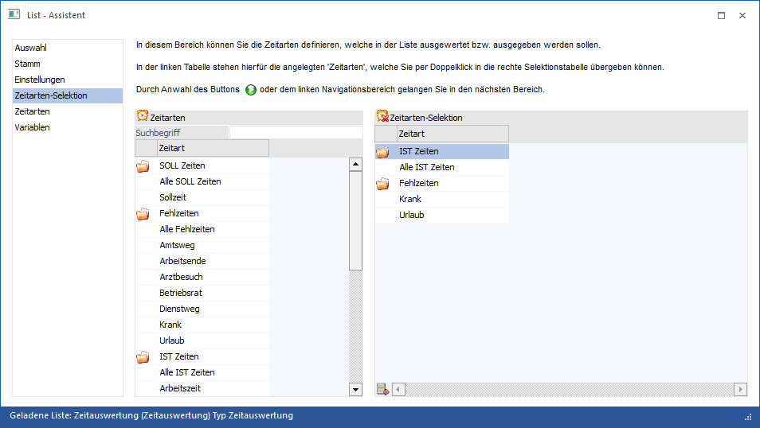

Bereich "Zeitarten-Selektion"
Wenn es sich bei der Liste um eine Zeitartenliste handelt (Listtyp "27 - Zeitauswertung") dann steht der Bereich "Zeitarten-Selektion" zur Verfügung. Hier kann definiert werden, welche Zeitarten in der Liste berücksichtigt werden sollen.

In der linken Tabelle werden alle unterschiedlichen Zeitarten angezeigt. Durch Eingabe eines Suchbegriffs kann die Ansicht der Zeitarten eingeschränkt werden. Die Übernahme in die Tabelle erfolgt anschließen per Doppelklick.
In der rechten Tabelle werden die selektierten Zeitartentypen (IST Zeiten, Fehlzeiten etc.) und Zeitarten angezeigt.
Hinweis
Für die Bereiche "SOLL Zeiten", "Fehlzeiten", "IST Zeiten" und "Pausen" gibt es jeweils einen Eintrag "Alle Zeiten". Wenn dieser Eintrag Mittels Doppelklick auf die rechte Seite übernommen wird, dann werden standardmäßig alle in diesem Bereich angelegte Zeitarten/Pausen ausgewertet. Das hat den Vorteil, dass ggf. nachträglich angelegte Zeitarten automatisch in der Liste berücksichtigt werden können, ohne dass man die Liste dafür extra anpassen muss.
Tabellenbuttons

Ø Zeile entfernen
Durch Anklicken des Buttons "Zeile entfernen" können nicht mehr benötigte Einträge aus der Tabelle wieder gelöscht werden.
Achtung
Wenn Zeitarten in die Tabelle übernommen werden, so werden diese in Überschriften zusammengefasst. Diese Überschriften können nicht aus der Tabelle entfernt werden.
Ø Ausgabe Excel
Durch Anwahl des Buttons "Ausgabe Excel" wird der Inhalt der Tabelle an Microsoft Excel übergeben.
Ø Tabelleneinstellungen speichern
Die Spalten einer Tabelle können grundsätzlich an beliebige Positionen verschoben, bzw. in der Breite entsprechend angepasst werden. Durch Anwahl des Buttons "Tabelleneinstellungen speichern" werden die Einstellungen benutzerspezifisch gespeichert und bei dem nächsten Aufruf des Programmpunktes wieder vorgeschlagen.
Ø Gesamteinstellungen speichern
Im Gegensatz zu "Tabelleneinstellungen speichern" können mit "Gesamteinstellungen speichern" mehrere Tabellenaufbauten gespeichert und nach Wunsch geladen werden. Zusätzlich werden Sonderfunktionen der Tabelle (z.B. "Spalte gruppieren") ebenfalls bei der Speicherung bedacht.